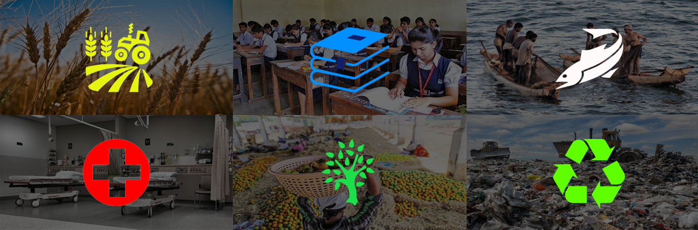

SHINE- Sahyadri Hub for Innovation and Entrepreneurship
Sahyadri group has taken initiatives for providing a comprehensive eco-system for supporting
innovations and startups with a special focus on building inclusive innovations for local
problems. Sahyadri over the past decade has taken several initiatives in this space to emerge as
the innovation hub of the region. Every year the college enlightens and encourages over 30000
students over 150 schools and colleges to come up with 2 ideas that can solve community
problems.
Our Areas of Focus

Our Supporters